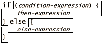
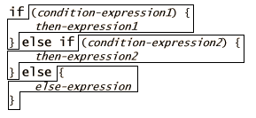

| |
The if Expressions |
||||||

As is familiar, the if-expression first evaluates the condition-expression to a boolean. If it evaluates to true, the then-expression is evaluated. If it evaluates to false, the else-expression is evaluated. (By evaluating to a boolean , we mean that if it evaluates to something other than true or false, a to-be-specified*** exception is thrown.)
Nested Scope Boxes
The value of the if-expression is the value of either the then-expression or the else expression, whichever got evaluated. Though E numbers already respond to a "max" message, it still serves as a good example. The following are equivalent:
def z := x.max(y)
def z := if (x > y) {x} else {y}
The boxes above illustrate nested scopes. Since there can be several different definitions in a program for the same variable-name, there must be some rules to determine, for a given use of that variable name in an expression, which definition it corresponds to. These rules are called scoping. E's default scoping rules should seem familiar:
-
For each expression-type, the scopes are illustrated by the overlaid boxes. Nested boxes illustrate nested scopes. By default, a scope starts after the introducing keyword and lasts till the corresponding close curly.
-
A variable-name definition is in-scope only left-to-right starting from where the variable name appears in its definition, and ending at the end of its enclosing scope box.
-
There cannot be two definitions for the same variable-name within the same scope box. (An E compiler must reject such a program.)
-
A use of a variable name corresponds to the closest in-scope definition. We refer to this closest definition as the visible definition.
The placement of the scope boxes is the only change to traditional scope rules. In most C-tradition languages, the condition-expression -- being an expression -- cannot introduce new variable name definitions. Therefore, the traditional languages mostly don't care whether the first nested scope includes the condition-expression or not. In E, the condition-expression is included, enabling idioms like:
if ((def c := reader.readChar()) != null) {
... c ... # character read, c in scope here
} else {
... # at end-of-file, c not in scope here
}
or, equivalently (remember that "?" means "such that"):
if (reader.readChar() =~ c ? (c != null)) {
... c ...
} else {
...
}
and:
if (specimen =~ [first, second]) {
... # specimen is a 2-list, first and second are the elements
} else {
... # not
}
The value of a pattern-match expression is true when the match succeeds. When the pattern contains variable-definitions, like first and second above, then a successful match will define these variables to hold values derived from the specimen. By using a pattern-match expression as the condition-expression of an if , these variables are available in the then-expression, but not the else-expression.
Other forms of if
We define the if-then in terms of the above if-then-else by appending an "else { null }". In other words, if the condition is true, the value of the above if-expression is the value the then-expression. If the condition is false, the value is null.

If's can be chained in the conventional manner. No surprises here. We define this in terms of the above if-then-else by putting open curlies between each else if pair, and putting all the extra close curlies at the end.
Unless stated otherwise, all text on this page which is either unattributed or by Mark S. Miller is hereby placed in the public domain.
| |
|
report bug (including invalid html)
|
||||||||